Contiguous The simplest datatype constructor is MPI_TYPE_CONTIGUOUS which allows replication of a datatype into contiguous locations.
MPI_TYPE_CONTIGUOUS(count, oldtype, newtype)
[ IN count] replication count (nonnegative integer)
[ IN oldtype] old datatype (handle)
[ OUT newtype] new datatype (handle)
int MPI_Type_contiguous(int count, MPI_Datatype oldtype, MPI_Datatype *newtype)
MPI_TYPE_CONTIGUOUS(COUNT, OLDTYPE, NEWTYPE, IERROR)
INTEGER COUNT, OLDTYPE, NEWTYPE, IERROR
newtype is the datatype obtained by concatenating count copies of oldtype. Concatenation is defined using extent as the size of the concatenated copies.
Example
Let oldtype have type map
 with extent 16,
and let 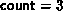
. The type map of
the datatype returned by newtype is
with extent 16,
and let 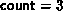
. The type map of
the datatype returned by newtype is
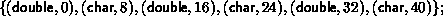
i.e., alternating double and char elements, with displacements 0, 8, 16, 24, 32, 40.
In general, assume that the type map of oldtype is
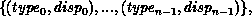
with extent ex. Then newtype has a type map with 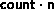 entries defined by:
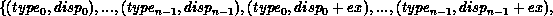
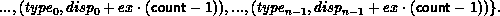
Vector The function MPI_TYPE_VECTOR is a more general constructor that allows replication of a datatype into locations that consist of equally spaced blocks. Each block is obtained by concatenating the same number of copies of the old datatype. The spacing between blocks is a multiple of the extent of the old datatype.
MPI_TYPE_VECTOR( count, blocklength, stride, oldtype,
newtype)
[ IN count] number of blocks (nonnegative integer)
[ IN blocklength] number of elements in each block
(nonnegative integer)
[ IN stride] number of elements between start of each block (integer)
[ IN oldtype] old datatype (handle)
[ OUT newtype] new datatype (handle)
int MPI_Type_vector(int count, int blocklength, int stride, MPI_Datatype oldtype, MPI_Datatype *newtype)
MPI_TYPE_VECTOR(COUNT, BLOCKLENGTH, STRIDE, OLDTYPE, NEWTYPE, IERROR)
INTEGER COUNT, BLOCKLENGTH, STRIDE, OLDTYPE, NEWTYPE, IERROR
Example
Assume, again, that oldtype has type map
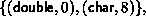
with extent 16.
A call to MPI_TYPE_VECTOR( 2, 3, 4, oldtype, newtype) will
create the datatype with type map,
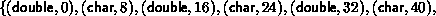
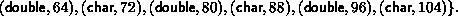
That is, two blocks with three copies each of the old type, with a stride of 4 elements (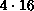 bytes) between the blocks.
Example
A call to MPI_TYPE_VECTOR(3, 1, -2, oldtype, newtype) will create
the datatype,
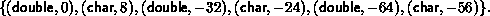
In general, assume that oldtype has type map,

with extent ex. Let bl be the blocklength. The newly created datatype has a type map with 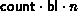
entries:
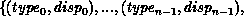


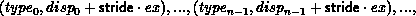
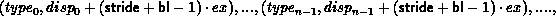
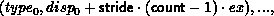
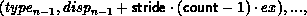
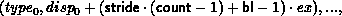
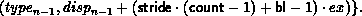
A call to MPI_TYPE_CONTIGUOUS(count, oldtype, newtype) is equivalent to a call to MPI_TYPE_VECTOR(count, 1, 1, oldtype, newtype), or to a call to MPI_TYPE_VECTOR(1, count, n, oldtype, newtype), n arbitrary.
Hvector The function MPI_TYPE_HVECTOR is identical to MPI_TYPE_VECTOR, except that stride is given in bytes, rather than in elements. The use for both types of vector constructors is illustrated in Sec. Examples . ( H stands for ``heterogeneous'').
MPI_TYPE_HVECTOR( count, blocklength, stride,
oldtype, newtype)
[ IN count] number of blocks (nonnegative integer)
[ IN blocklength] number of elements in each block
(nonnegative integer)
[ IN stride] number of bytes between start of each block (integer)
[ IN oldtype] old datatype (handle)
[ OUT newtype] new datatype (handle)
int MPI_Type_hvector(int count, int blocklength, MPI_Aint stride, MPI_Datatype oldtype, MPI_Datatype *newtype)
MPI_TYPE_HVECTOR(COUNT, BLOCKLENGTH, STRIDE, OLDTYPE, NEWTYPE, IERROR)
INTEGER COUNT, BLOCKLENGTH, STRIDE, OLDTYPE, NEWTYPE, IERROR
Assume that oldtype has type map,

with extent ex. Let bl be the blocklength.
The newly created datatype has a type map with

entries:

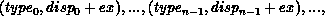

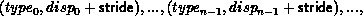
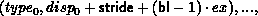
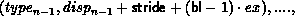
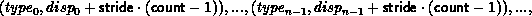
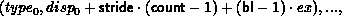
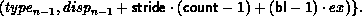
Indexed The function MPI_TYPE_INDEXED allows replication of an old datatype into a sequence of blocks (each block is a concatenation of the old datatype), where each block can contain a different number of copies and have a different displacement. All block displacements are multiples of the old type extent.
MPI_TYPE_INDEXED( count, array_of_blocklengths,
array_of_displacements, oldtype, newtype)
[ IN count] number of blocks -- also number of entries in
array_of_displacements and
array_of_blocklengths (nonnegative integer)
[ IN array_of_blocklengths] number of elements per block
(array of nonnegative integers)
[ IN array_of_displacements] displacement for each block,
in multiples of oldtype extent (array of integer)
[ IN oldtype] old datatype (handle)
[ OUT newtype] new datatype (handle)
int MPI_Type_indexed(int count, int *array_of_blocklengths, int *array_of_displacements, MPI_Datatype oldtype, MPI_Datatype *newtype)
MPI_TYPE_INDEXED(COUNT, ARRAY_OF_BLOCKLENGTHS, ARRAY_OF_DISPLACEMENTS, OLDTYPE, NEWTYPE, IERROR)
INTEGER COUNT, ARRAY_OF_BLOCKLENGTHS(*), ARRAY_OF_DISPLACEMENTS(*), OLDTYPE, NEWTYPE, IERROR
Example
Let oldtype have type map
 with extent 16.
Let B = (3, 1) and let D = (4, 0). A call to
MPI_TYPE_INDEXED(2, B, D, oldtype, newtype) returns a datatype with
type map,
with extent 16.
Let B = (3, 1) and let D = (4, 0). A call to
MPI_TYPE_INDEXED(2, B, D, oldtype, newtype) returns a datatype with
type map,
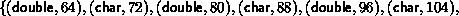
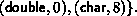
That is, three copies of the old type starting at displacement 64, and one copy starting at displacement 0.
In general, assume that oldtype has type map,

with extent ex.
Let B be the array_of_blocklength argument and
D be the
array_of_displacements argument. The newly created datatype
has 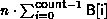
entries:
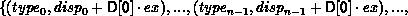
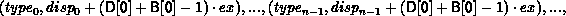
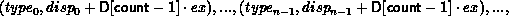
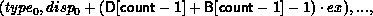
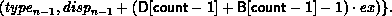
A call to MPI_TYPE_VECTOR(count, blocklength, stride, oldtype, newtype) is equivalent to a call to MPI_TYPE_INDEXED(count, B, D, oldtype, newtype) where
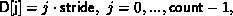
and
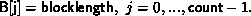
Hindexed The function MPI_TYPE_HINDEXED is identical to MPI_TYPE_INDEXED, except that block displacements in array_of_displacements are specified in bytes, rather than in multiples of the oldtype extent.
MPI_TYPE_HINDEXED( count, array_of_blocklengths,
array_of_displacements, oldtype, newtype)
[ IN count] number of blocks -- also number of entries in
array_of_displacements and
array_of_blocklengths (integer)
[ IN array_of_blocklengths] number of elements in each block
(array of nonnegative integers)
[ IN array_of_displacements] byte displacement of each block
(array of integer)
[ IN oldtype] old datatype (handle)
[ OUT newtype] new datatype (handle)
int MPI_Type_hindexed(int count, int *array_of_blocklengths, MPI_Aint *array_of_displacements, MPI_Datatype oldtype, MPI_Datatype *newtype)
MPI_TYPE_HINDEXED(COUNT, ARRAY_OF_BLOCKLENGTHS, ARRAY_OF_DISPLACEMENTS, OLDTYPE, NEWTYPE, IERROR)
INTEGER COUNT, ARRAY_OF_BLOCKLENGTHS(*), ARRAY_OF_DISPLACEMENTS(*), OLDTYPE, NEWTYPE, IERROR
Assume that oldtype has type map,

with extent ex.
Let B be the array_of_blocklength argument and
D be the
array_of_displacements argument. The newly created datatype
has a type map with
 entries:
entries:
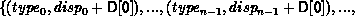
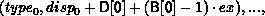
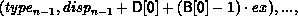
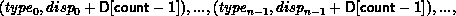
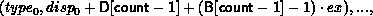
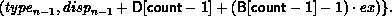
Struct MPI_TYPE_STRUCT is the most general type constructor. It further generalizes the previous one in that it allows each block to consist of replications of different datatypes.
MPI_TYPE_STRUCT(count, array_of_blocklengths,
array_of_displacements, array_of_types, newtype)
[ IN count] number of blocks (integer) -- also number of
entries in arrays array_of_types,
array_of_displacements and array_of_blocklengths
[ IN array_of_blocklength] number of elements in each block
(array of integer)
[ IN array_of_displacements] byte displacement of each block
(array of integer)
[ IN array_of_types] type of elements in each block (array
of handles to datatype objects)
[ OUT newtype] new datatype (handle)
int MPI_Type_struct(int count, int *array_of_blocklengths, MPI_Aint *array_of_displacements, MPI_Datatype *array_of_types, MPI_Datatype *newtype)
MPI_TYPE_STRUCT(COUNT, ARRAY_OF_BLOCKLENGTHS, ARRAY_OF_DISPLACEMENTS, ARRAY_OF_TYPES, NEWTYPE, IERROR)
INTEGER COUNT, ARRAY_OF_BLOCKLENGTHS(*), ARRAY_OF_DISPLACEMENTS(*), ARRAY_OF_TYPES(*), NEWTYPE, IERROR
Example
Let type1 have type map,
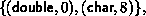
with extent 16. Let B = (2, 1, 3), D = (0, 16, 26), and T = (MPI_FLOAT, type1, MPI_CHAR). Then a call to MPI_TYPE_STRUCT(3, B, D, T, newtype) returns a datatype with type map,

That is, two copies of MPI_FLOAT starting at 0, followed by one copy of type1 starting at 16, followed by three copies of MPI_CHAR, starting at 26. (We assume that a float occupies four bytes.)
In general, let T be the array_of_types argument, where T[i] is a handle to,
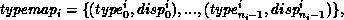
with extent exi. Let B be the array_of_blocklength argument and D be the array_of_displacements argument.Let c be the count argument. Then the newly created datatype has a type map with 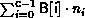
entries:
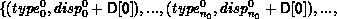
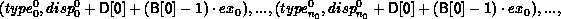
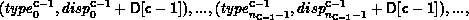
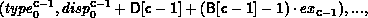
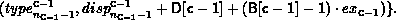
A call to MPI_TYPE_HINDEXED( count, B, D, oldtype, newtype) is equivalent to a call to MPI_TYPE_STRUCT( count, B, D, T, newtype), where each entry of T is equal to oldtype.